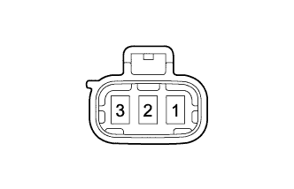
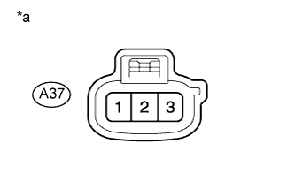
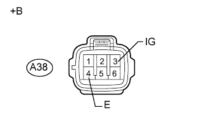

СИСТЕМА СТЕКЛООЧИСТИТЕЛЕЙ И СТЕКЛООМЫВАТЕЛЕЙ > Цепь электродвигателя и реле очистителя передних фар |
| 1.ВЫПОЛНИТЕ АКТИВНУЮ ДИАГНОСТИКУ С ПОМОЩЬЮ ПОРТАТИВНОГО ДИАГНОСТИЧЕСКОГО ПРИБОРА (РАБОТА ОЧИСТИТЕЛЯ ФАР) |
Выполните диагностику в режиме Active Test с помощью портативного диагностического прибора (Нажмите здесь).
| Информация на дисплее прибора | Испытываемое устройство | Диапазон регулирования | Замечание по диагностике |
| Head Light Cleaner | Работа очистителя фар | ON (ВКЛ) / OFF (ВЫКЛ) | - |
|
| ||||
| OK | ||
| ||
| 2.ПРОВЕРЬТЕ НАСОС И ЭЛЕКТРОДВИГАТЕЛЬ НАСОСА ОЧИСТИТЕЛЯ ФАР В СБОРЕ |
|  |
Снимите электродвигатель очистителя фар (Нажмите здесь).
Подайте напряжение аккумуляторной батареи на электродвигатель очистителя фар и проверьте его работу.
| Условия измерений | Заданные условия |
| Положительный (+) вывод аккумуляторной батареи → 2 Отрицательный (-) вывод аккумуляторной батареи → 1 | Электродвигатель очистителя фар работает |
|
| ||||
| OK | |
| 3.ПРОВЕРЬТЕ ЖГУТ ПРОВОДОВ И РАЗЪЕМ (ЭЛЕКТРОДВИГАТЕЛЬ И НАСОС ОЧИСТИТЕЛЯ ФАР В СБОРЕ - АККУМУЛЯТОРНАЯ БАТАРЕЯ) |
|  |
Отсоедините разъем A37 электродвигателя очистителя фар.
Измерьте напряжение в соответствии со значениями, приведенными в таблице.
| Контакты для подключения диагностического прибора | Условие | Заданные условия |
| A37-2 - масса | Всегда | 11-14 В |
| *a | Вид спереди разъема со стороны жгута проводов: (к насосу и электродвигателю насоса очистителя фар в сборе) |
|
| ||||
| OK | |
| 4.ПРОВЕРЬТЕ ЖГУТ ПРОВОДОВ И РАЗЪЕМ (УПРАВЛЯЮЩЕЕ РЕЛЕ ОЧИСТИТЕЛЯ ФАР - АККУМУЛЯТОРНАЯ БАТАРЕЯ И МАССА) |
|  |
Отсоедините разъем A38 реле управления очистителем фар.
Измерьте напряжение в соответствии со значениями, приведенными в таблице.
| Контакты для подключения диагностического прибора | Положение переключателя | Заданные условия |
| A38-3 (IG) - масса | Зажигание включено | 11 - 14 В |
| A38-3 (IG) - масса | Зажигание выключено | менее 1 В |
Измерьте сопротивление в соответствии со значениями, приведенными в таблице ниже.
| Контакты для подключения диагностического прибора | Условие | Заданные условия |
| A38-4 (E) - масса | Всегда | Менее 1 Ом |
| *a | Вид спереди разъема со стороны жгута проводов: (к управляющему реле очистителя фар) |
|
| ||||
| OK | |
| 5.ПРОВЕРЬТЕ ЖГУТ ПРОВОДОВ И РАЗЪЕМ (ЭЛЕКТРОДВИГАТЕЛЬ И НАСОС ОЧИСТИТЕЛЯ ФАР В СБОРЕ - РЕЛЕ УПРАВЛЕНИЯ ОЧИСТИТЕЛЕМ ФАР) |
Отсоедините разъем A38 реле управления очистителем фар.
Отсоедините разъем A37 электродвигателя очистителя фар.
Измерьте сопротивление в соответствии со значениями, приведенными в таблице ниже.
| Контакты для подключения диагностического прибора | Условие | Заданные условия |
| A37-1 - A38-6 (PB) | Всегда | Менее 1 Ом |
| A38-6 (PB) - масса | Всегда | 10 кОм или более |
|
| ||||
| OK | ||
| ||